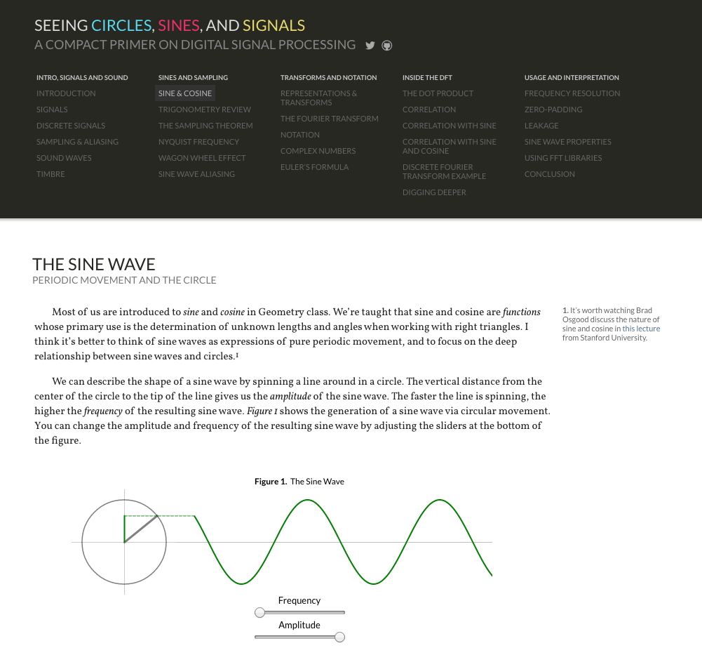
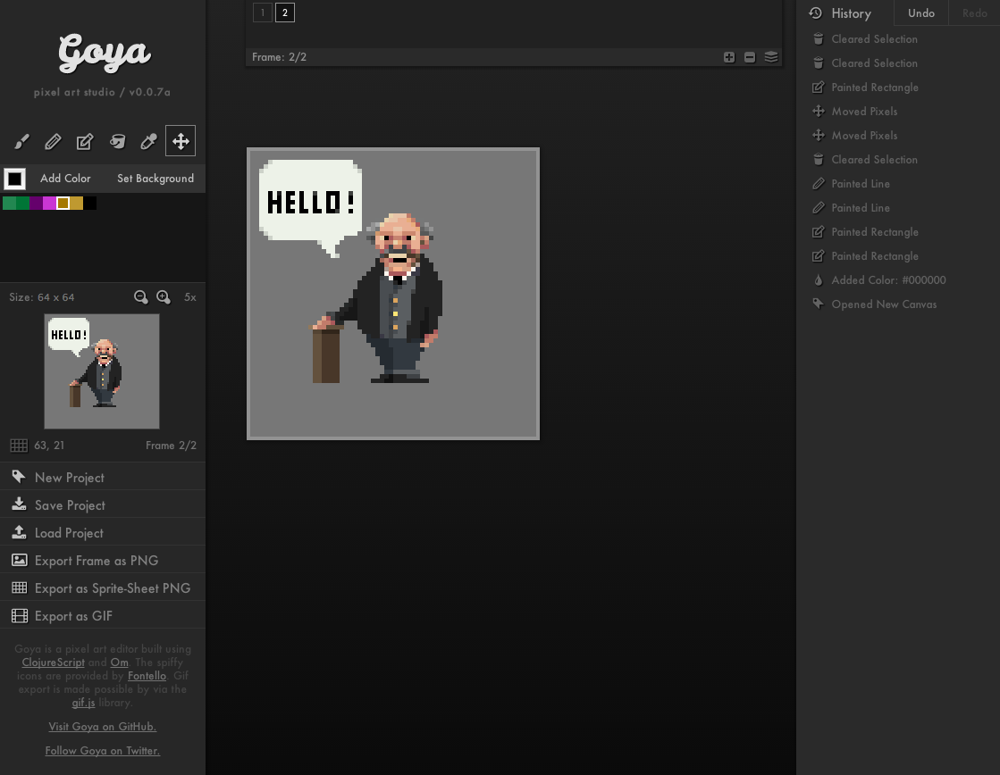

SEEING CIRCLES, SINES, AND SIGNALS
A COMPACT PRIMER ON DIGITAL SIGNAL PROCESSING
A COMPACT PRIMER ON DIGITAL SIGNAL PROCESSING
|  | Seeing Circles, Sines, and Signals is an introductory text on digital signal processing. It was inspired by Alan Kay’s conception of the “Active Essay” and Bret Victor’s notion of the “Explorable Explanation”. It mixes conventional explanatory text with over thirty interactive and dynamic visualizations of fundamental mathematical concepts related to signal processing and the Discrete Fourier Transform. The project was widely shared, and has been viewed over 100,000 times. The work was praised by Rick Lyons, author of the fantastic textbook, Understanding DSP. (2015) |
GOYA
CLOJURESCRIPT BASED PIXEL EDITOR
CLOJURESCRIPT BASED PIXEL EDITOR
|  | Goya is a browser-based piece of software for making animated pixel art. It is written in ClojureScript, a LISP dialect invented by Rich Hickey. Goya was one of the first open-source projects to utilize David Nolen’s Om library and clearly demonstrate a trivial implementation of undo, redo, and “time travelling preview” based on the use of immutable data structures. David Nolen has used Goya as an example application in many of his talks on ClojureScript and React. (2014) |